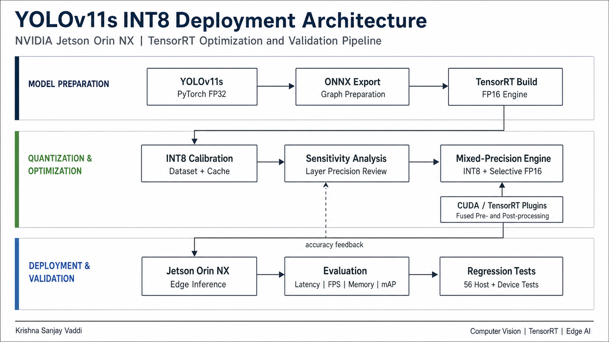

01 / ML & Edge

YOLOv11s INT8 TensorRT Audit Suite
Host/device validation toolkit for converting YOLOv11s from FP32 to FP16 and INT8 on NVIDIA Jetson Orin NX without hiding per-class regressions.
- 56 passing tests across calibration, accuracy, sensitivity, and plugin behavior.
- Per-class mAP comparison and selective FP16 fallback planning.
FP32 model → calibration → TensorRT INT8 → accuracy audit
Detailed architecture
- 01Export
Ultralytics YOLOv11s weights are exported to ONNX with locked input shapes and preprocessing assumptions.
- 02Build baselines
FP32 and FP16 TensorRT engines establish accuracy and latency baselines before quantization.
- 03Calibrate INT8
Entropy and min-max calibrators run 32, 128, and 512-image sweeps with reusable calibration caches.
- 04Audit accuracy
COCO-style per-class mAP and output-difference checks flag regressions greater than two percent.
- 05Plan precision
SQNR sensitivity ranks fragile layers and produces selective FP16 fallback plans for Jetson deployment.
- Execution split
- NumPy/pytest validation runs on any host; TensorRT, CUDA, engine builds, and benchmarks run on Jetson Orin NX.
- Outputs
- Engine files, raw benchmark JSON, per-class accuracy tables, precision decisions, and a rendered benchmark report.